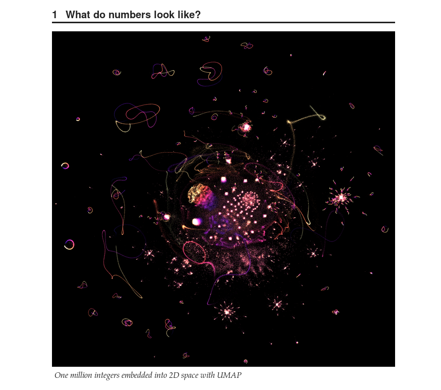
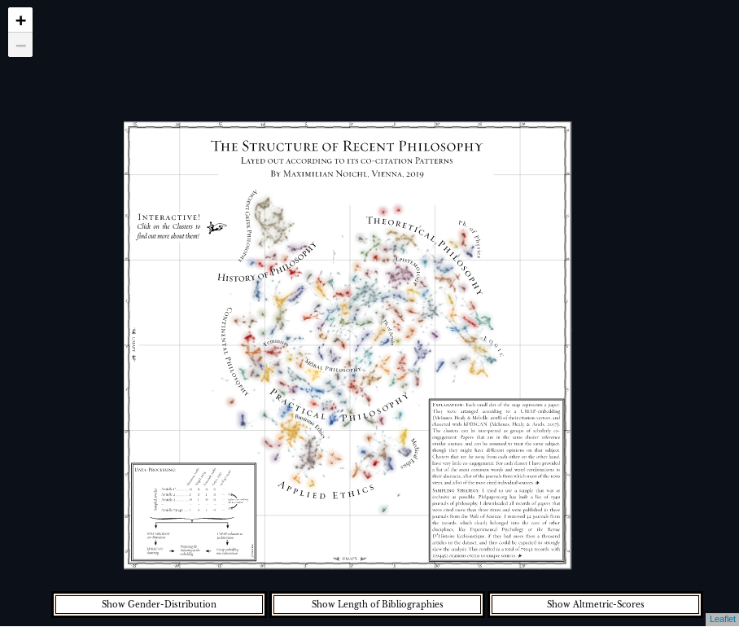
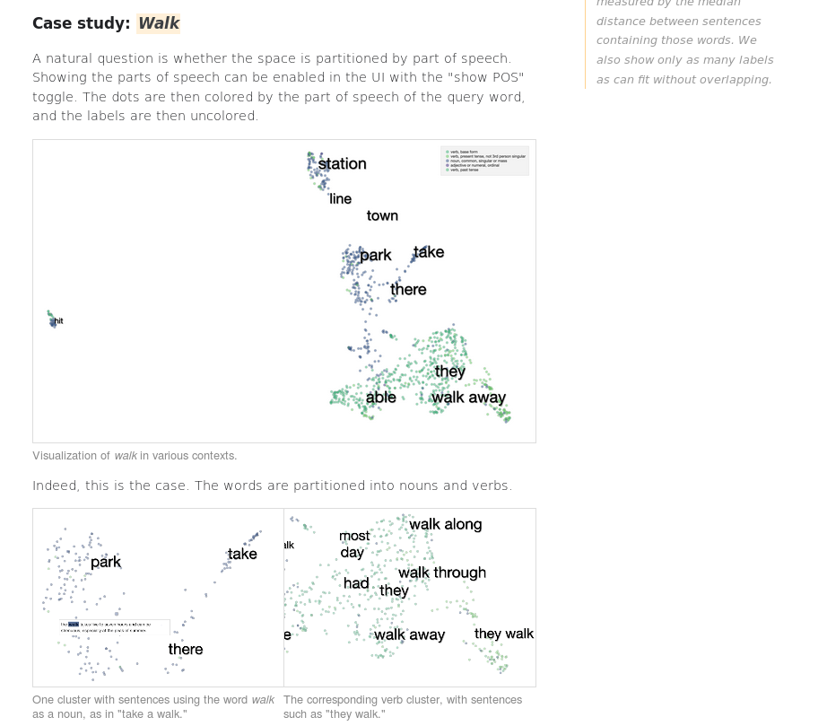
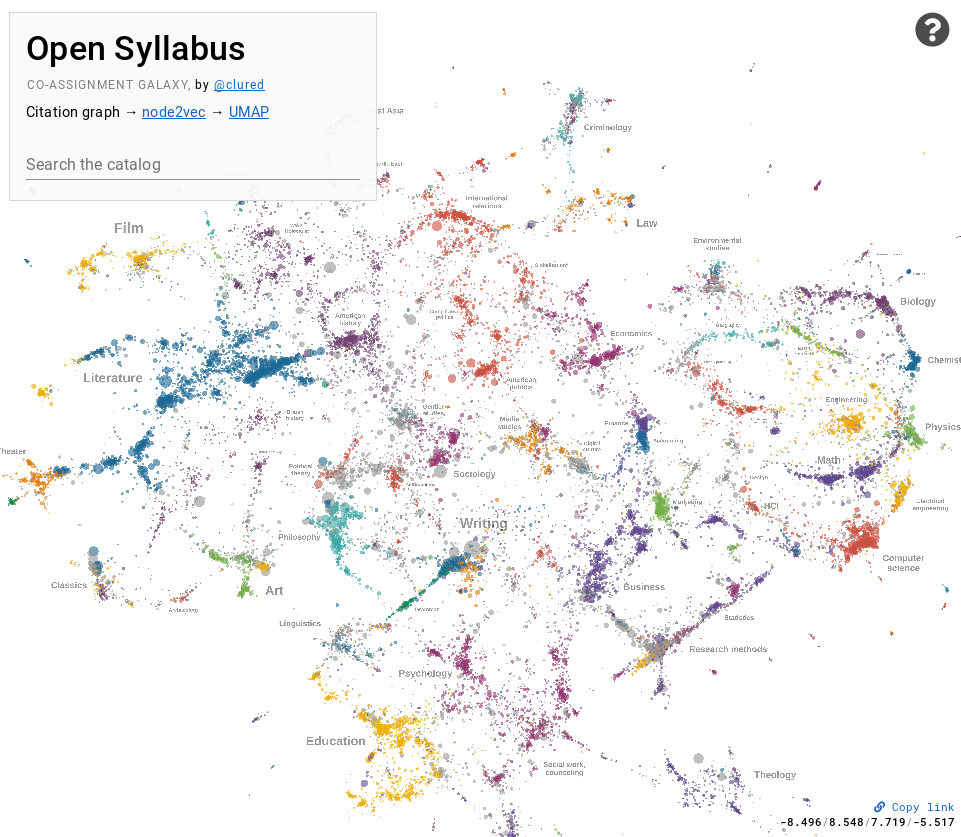

Exploratory Analysis of Interesting Datasets
UMAP is a useful tool for general exploratory analysis of data – it can provide a unique lens through which to view data that can highlight structures and properties hiding in data that are not as apparent when analysed with other techniques. Below is a selection of uses cases of UMAP being used for interesting explorations of intriguing datasets – everything from pure math and outputs of neural networks, to philosophy articles, and scientific texts.
Prime factorizations of numbers
What would happen if we applied UMAP to the integers? First we would need a way to express an integer in a high dimensional space. That can be done by looking at the prime factorization of each number. Next you have to take enough numbers to actually generate an interesting visualization. John Williamson set about doing exactly this, and the results are fascinating. While they may not actually tell us anything new about number theory they do highlight interesting structures in prime factorizations, and demonstrate how UMAP can aid in interesting explorations of datasets that we might think we know well. It’s worth visiting the linked article below as Dr. Williamson provides a rich and detailed exploration of UMAP as applied to prime factorizations of integers.
{kind=link}
Thanks to John Williamson.
Structure of Recent Philosophy
Philosophy is an incredibly diverse subject, ranging from social and moral philosophy to logic and philosophy of math; from analysis of ancient Greek philosophy to modern business ethics. If we could get an overview of all the philosophy papers published in the last century what might it look like? Maximilian Noichl provides just such an exploration, looking at a large sampling of philosophy papers and comparing them according to their citations. The results are intriguing, and can be explored interactively in the viewer Maximilian built for it.
{kind=link}
Structure of Recent Philosophy
Thanks to Maximilian Noichl.
Language, Context, and Geometry in Neural Networks
Among recent developments in natural language processing is the BERT neural network based technique for analysis of language. Among many things that BERT can do one is context sensitive embeddings of words – providing numeric vector representations of words that are sensitive to the context of how the word is used. Exactly what goes on inside the neural network to do this is a little mysterious (since the network is very complex with many many parameters). A tram of researchers from Google set out to explore the word embedding space generated by BERT, and among the tools used was UMAP. The linked blog post provides a detailed and inspiring analysis of what BERT’s word embeddings look like, and how the different layers of BERT represent different aspects of language.
{kind=link}
Language, Context, and Geometry in Neural Networks
Thanks to Andy Coenen, Emily Reif, Ann Yuan, Been Kim, Adam Pearce, Fernanda Viégas, and Martin Wattenberg.
Activation Atlas
Understanding the image processing capabilities (and deficits!) of modern convolutional neural networks is a challenge. Certainly these models are capable of amazing feats in, for example, image classification. They can also be brittle in unexpected ways, with carefully designed images able to induce otherwise baffling mis-classifications. To better understand this researchers from Google and OpenAI built the activation atlas – analysing the space of activations of a neural network. Here UMAP provides a means to compress the activation landscape down to 2 dimensions for visualization. The result was an impressive interactive paper in the Distill journal, providing rich visualizations and new insights into the working of convolutional neural networks.

Thanks to Shan Carter, Zan Armstrong, Ludwig Schubert, Ian Johnson, and Chris Olah.
Open Syllabus Galaxy
Suppose you wanted to explore the space of commonly assigned texts from Open Syllabus? That gives you over 150,000 texts to consider. Since the texts are open you can actually analyse the text content involved. With some NLP and neural network wizardry David McClure build a network of such texts and then used node2vec and UMAP to generate a map of them. The result is a galaxy of textbooks showing inter-relationships between subjects, similar and related texts, and generally just a an interesting ladscape of science to be explored. As with some of the other projects here David made a great interactive viewer allowing for rich exploration of the results.
{kind=link}
Thanks to David McClure.